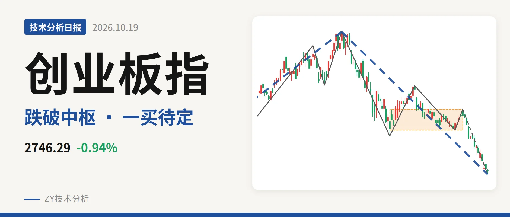
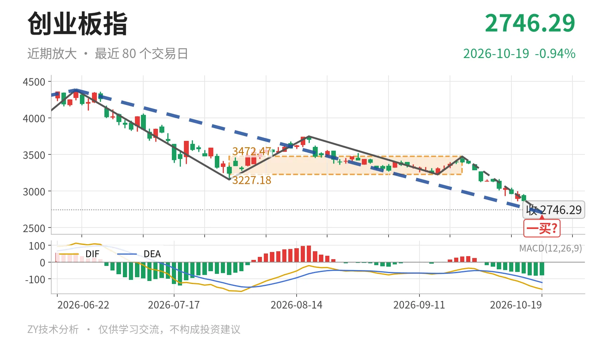

创业板指｜跌破3227点，暂现一买待验证

最近日线中枢 3227.18—3472.47点，收盘位于中枢之下
一句话：跌破3227点暂定一买，无底背驰，结构偏弱
📉 走势结构：大级别上涨未坏，日线回落还在延续
更大级别上，2024年2月5日至2026年6月25日的上涨段仍处于延续状态，从1482.99点启动后的上行结构没有被破坏。但6月25日以来的下跌段也在延续，日线线段由4380.41点回落到2708.92点，累计下跌约38.2%，已经包含5笔，没有结束信号。当前不是新上涨段，而是上涨结构里的日线级别深度回落。

🧭 中枢与位置：跌破最近中枢下沿，向下离开
最近一个尚未完成的日线笔中枢是7月30日至9月22日中枢（3227.18—3472.47点），中轴3349.83点。最新收盘2746.29点位于下沿下方约14.9%，已经向下离开中枢。该中枢相比2025年5月14日至2025年6月23日的中枢（1996.96—2076.91点）明显上移，但当前价格重新落到其下沿之下，中轴也同步失守。
⚠️ 买卖点：10月19日一买只是暂定
日线笔级别上，1月13日一卖3416.84点、2月25日二卖3363.18点之后，6月25日又创出4380.41点新高，因此这两个卖点只对应日线笔级别调整，没有转为更大级别转折。最近一个买点是10月19日一买2708.92点，落在9月22日至10月19日下跌笔内，该笔还在延续，只能先按暂定的一买处理，会随这一笔延续而变化。

📊 背驰：最新下跌力度未现衰减
同向比较8月18日至9月16日下跌笔与9月22日至10月19日下跌笔。前者绿柱面积147，DIF低点-76.6；后者截至10月19日绿柱面积567，DIF低点-161.9。价格创出2708.92点新低，同时绿柱面积与DIF低点同步放大，没有出现“新低不新弱”，下跌动能尚未衰竭。当前DIF仍在零轴下方，绿柱报-79.9，该笔仍可能继续变化，比较以这段还在延续的下跌为准。
🎯 关键位置观察：反抽不过3227点则偏弱
后续反抽若回不到3227点上方，结构上构成三卖；重新站上3227点，则6月25日以来的下跌更可能只是中枢扩展。下方可看2283点附近，即2022年4月27日至2023年8月4日线段中枢上沿。整体结构偏弱，弱在跌破最近中枢下沿后尚无底背驰支撑。
⚠️ 本文为基于公开行情数据的缠论技术结构记录，由程序自动计算并生成，仅供学习交流，不构成任何投资建议。市场有风险，投资需谨慎。